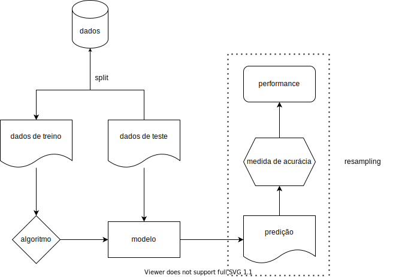

This is the first post in a series about the {mlr3} ecosystem (Lang et al. 2019). It is more complete and also much more complex than its predecessor, {mlr}, which had its initial version published on CRAN in 2013. The ecosystem provides an agnostic framework (i.e., it does not depend on the chosen algorithms), extensible and object-oriented, and currently supports various types of tasks such as classification, regression, survival analysis, forecasting, clustering, among others. {mlr3} has several advantages that make it, IMHO, the most complete machine learning framework for R (R Core Team 2020), and these will become clear throughout the next posts.
1 INTRODUCTION
The standard workflow of a machine learning project consists of:
splitting your sample into training and test sets;
choosing the appropriate algorithm1 for the task type;
passing the training sample to the algorithm to create a model of the relationship between the response variable (output features) and the explanatory variables (input features);
passing the test data to the trained model to produce predictions;
comparing the predictions with the sample data;
measuring the model’s performance using established accuracy metrics.

The process of repeating this workflow several times, splitting the training sample into different parts and using others as fake test samples, is called resampling, a vital process for the calibration stage and to avoid overfitting.
Depending on the data, the type of task, and the chosen algorithm, several filters may be necessary, such as normalization, feature selection, and handling outliers or missing data. For these cases, {mlr3} has new solutions that stand out not only compared to its predecessor {mlr} but also to other machine learning frameworks in R, such as {caret} and {tidymodels}.
1.1 DESIGN CHARACTERISTICS
Some general principles that guide the package’s development and greatly affect its use are:
Focus on the backend. Most ecosystem packages aim to process and transform data, apply algorithms, and compute results. Visualizations are provided in external packages;
Adoption of the R6 class (Chang 2020) for object-oriented design, modify-in-place, and reference semantics (we’ll talk a bit about these concepts below);
Use of {data.table} (Dowle and Srinivasan 2020) for data frame manipulations. The combination of {R6} + {data.table} makes performance one of the ecosystem’s strengths.
Low dependency. However, algorithms are not implemented in the ecosystem, as in Python’s scikit-learn. To run XGBoost (Chen et al. 2020), for example, you must have the package that implements it installed.
1.2 OUT OF SCOPE
As this is an introduction, the steps of tuning and resampling, as well as functionalities like pipelines, will be covered in future posts. In this post, we will only cover the basic workflow concepts.
2 STRAIGHT TO THE POINT
To get to know the package’s basic functionalities, we’ll use one of the datasets included in R, swiss. This dataset consists of standardized measurements of fertility and socioeconomic indicators for 47 Swiss provinces in 1888.
Among the available variables, we can choose to model infant mortality Infant.Mortality based on the other features, which are:
Fertility: Fertility measure. Like infant mortality, it is scaled between 0-100.
Agriculture: Percentage of men involved in agriculture as an occupation.
Examination: Percentage of conscripts well evaluated in army exams.
Education: Percentage of conscripts with education above primary.
Catholic: Percentage of Catholics (as opposed to Protestants).
The workflow starts with the creation of the task, which is an object that contains the data and information about the task to be performed, such as the response variable2 and the other features, as well as their types. Since we want to predict a continuous numeric variable, this is a regression task.
Notice anything unusual? Since {mlr3} works with the R6 class, its handling is more similar to other object-oriented languages, such as Python. This class has two special properties:
Methods belong to objects and are called as object$method() and not as generic functions like foo(). This is the OOP (object-oriented programming) paradigm. In the example above, there is no function to create a task like task_regr_new(), but a new() method associated with the TaskRegr object;
R6 class objects are mutable, i.e., they are modified in place (modify-in-place) and therefore have reference semantics. This means they are not copied with each modification, unlike regular data frames (S3 class), which is a factor in memory allocation and, consequently, speed.
The side effect is that this is not very familiar to people who only know R and at first it may seem unnatural and confusing.
Once the object is created, we can access it to check and visualize the information it contains:
# checkingtask_swiss
<TaskRegr:swiss> (47 x 6)
* Target: Infant.Mortality
* Properties: -
* Features (5):
- dbl (3): Agriculture, Catholic, Fertility
- int (2): Education, Examination
# visualizingautoplot(task_swiss, type ="pairs")
We can see that only fertility is linearly correlated with infant mortality—the higher the fertility, the higher the mortality—and we can expect it to have more weight in predictions. The other variables do not show significant linear correlation with the response variable. However, they show moderate or strong correlation among themselves, but not enough to present collinearity, which would require treatment.
Now we select the algorithm3 that will be used to train the model. Here I chose XGBoost. The full list can be accessed in this static list, in this dynamic list, or via the function mlr3extralearners::list_mlr3learners(). As mentioned earlier, algorithms are not implemented by the {mlr3} ecosystem, and the lists show the packages where the algorithms were implemented and that must be installed for use.
# defining the learnerl_xgboost =lrn("regr.xgboost")# checkingl_xgboost
Let’s understand what the l_xgboost object tells us.
Model: Empty, as there is no trained model yet;
Parameters: The hyperparameters to be chosen and tuned for model performance;
Packages: The package where the algorithm was implemented and from which it will be imported by {mlr3};
Predict Type: If response, the prediction is returned as 0 or 1 for classification, or as a value for the response variable for regression—in this case, it will be infant mortality scaled in the [1, 100] range. If “prob”, for classification, the prediction returns the probability between 0 and 1;
Feature Type: The types of variables the algorithm can handle. For XGBoost, for example, only numeric variables can be used. This means that factors must be converted into binary values (i.e., 0 or 1), that is, the matrix must be made sparse—for a factor sex, for example, in the preprocessing phase columns sex.male and sex.female would be created, each with values 1 or 0;
Properties: Additional properties and capabilities of the algorithm. In this case, XGBoost can compute and return feature importance values for the model; handle missing data; and compute and return feature weights.
As you can see in parameters, no hyperparameters are set. We can access them as follows:
id class lower upper levels nlevels
<char> <char> <num> <num> <list> <num>
1: alpha ParamDbl 0 Inf [NULL] Inf
2: approxcontrib ParamLgl NA NA TRUE,FALSE 2
3: base_score ParamDbl -Inf Inf [NULL] Inf
4: booster ParamFct NA NA gbtree,gblinear,dart 3
5: callbacks ParamUty NA NA [NULL] Inf
6: colsample_bylevel ParamDbl 0 1 [NULL] Inf
is_bounded special_vals default storage_type tags
<lgcl> <list> <list> <char> <list>
1: FALSE <list[0]> 0 numeric train
2: TRUE <list[0]> FALSE logical predict
3: FALSE <list[0]> 0.5 numeric train
4: TRUE <list[0]> gbtree character train
5: FALSE <list[0]> <list[0]> list train
6: TRUE <list[0]> 1 numeric train
Since hyperparameter tuning is not the topic, let’s just set some basic things to demonstrate how this information is accessed and modified. The method for this is param_set$values:
# hyperparametersl_xgboost$param_set$values =list(# making the algorithm train more slowlyeta =0.1,# limiting tree depthmax_depth =5,# maximum number of iterationsnrounds =100)# checkingl_xgboost
The next steps are training and prediction—we’ll cover tuning and resampling in future posts. First, split the dataset into training and test sets. For this, we’ll use the sample() function on two methods of the task_swiss object, row_ids and nrow. The first enumerates the indices of each row:
While the second returns the number of rows in the dataset:
# nrow methodtask_swiss$nrow
[1] 47
Thus, we can select the dataset indices into two random samples:
# ensuring reproducibilityset.seed(1)# indices for training sampletrain_set =sample(task_swiss$row_ids, 0.7* task_swiss$nrow)# indices for test sampletest_set =setdiff(task_swiss$row_ids, train_set)# checkinghead(train_set)
[1] 4 39 1 34 23 14
With the indices selected, we can train only on the randomly chosen 70% of the sample, without copying the data and allocating unnecessary memory:
As we can see, in the first iteration the model obtained an rmse4. of 17.7, which is high considering the [1-100] scale of infant mortality. Throughout training, the error was reduced to 0.03, which does not mean that its performance will remain at this level when extrapolated to the test sample or new data, but it is a good sign. The expected result is that the real performance of the model, after being applied to the test sample, will be between the initial and final iteration. If it is better than the test performance, something is certainly wrong.
Let’s check the real performance after making predictions on the test sample. First, we pass the test indices to the learner object with the model and call the predict() method to get the predictions.
In the predictions object, both the values predicted by the model (response) and the sample values (truth) are stored. These values can then be compared to calculate the model’s accuracy using the score() method:
However, importance alone does not describe the relationship of the feature with the response variable, nor its direction, being a very poor measure of interpretation. We will discuss interpretation techniques in other posts.
Lang, Michel, Martin Binder, Jakob Richter, Patrick Schratz, Florian Pfisterer, Stefan Coors, Quay Au, Giuseppe Casalicchio, Lars Kotthoff, and Bernd Bischl. 2019. “mlr3: A Modern Object-Oriented Machine Learning Framework in R.”Journal of Open Source Software, December. https://doi.org/10.21105/joss.01903.
R Core Team. 2020. R: A Language and Environment for Statistical Computing. Vienna, Austria: R Foundation for Statistical Computing. https://www.R-project.org/.